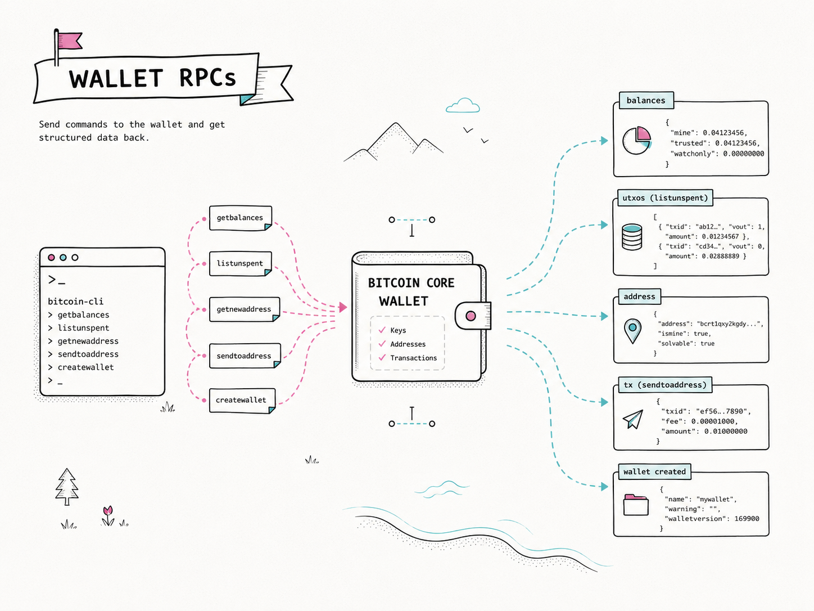
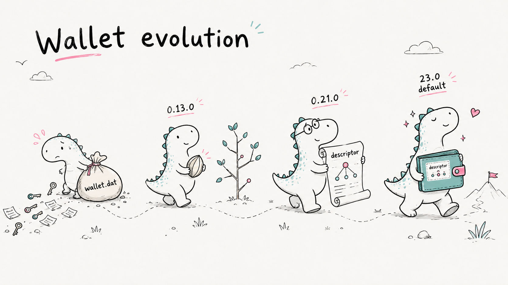
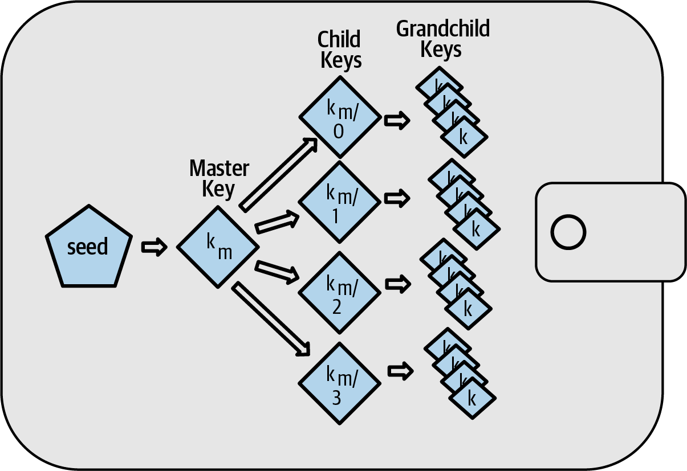

Bitcoin Core Wallet
Plan ₿ Summer School · Lugano · June - July 2026
Daniela Brozzoni
What is Bitcoin Core?
Bitcoin Core is the most widely used open-source implementation of a Bitcoin full node.
What does it do technically?
At a technical level, Bitcoin Core is a validating node: it checks blocks and transactions, maintains local state, and connects to the network.
- Validates Bitcoin independently: downloads blocks and verifies proof of work, transactions, scripts, and consensus rules.
- Maintains local state: stores the blockchain, tracks the UTXO set, and manages the mempool.
- Participates in the P2P network: connects to peers and relays valid transactions and blocks.
- Provides developer interfaces: exposes RPC/REST APIs and includes an optional wallet.
How Bitcoin Core development works
Bitcoin Core is an open source project. Development happens publicly, mostly through the GitHub repository at github.com/bitcoin/bitcoin.
- Anyone can read the code, build it, test it, and study the history of changes
- Anyone can propose a code change by opening a pull request
- Anyone can review other people's pull requests and leave technical feedback
- Review is how contributors discuss behavior, safety, maintainability, compatibility, and whether a change is worth making
Who maintains Bitcoin Core
Bitcoin Core does not have a company or single lead developer deciding what Bitcoin is. It is maintained through open collaboration.
- Contributors propose, discuss, test, and review changes
- Maintainers help manage the repository and merge reviewed changes
- Maintainers do not own Bitcoin and do not unilaterally define consensus rules
- Important changes usually need broad technical agreement before they move forward
Releases and versions
Bitcoin Core is released as versioned software. Users and developers choose when to upgrade, and releases are prepared carefully.
- Release candidates are tested before a final release
- Release notes describe important changes, removals, and upgrade considerations
- Published binaries and source archives can be verified before running them
- Some fixes may be backported to supported release branches
Code map
A practical way to read the repository is to separate the node engine from the interfaces and the project support code around it.

Validation
Validation is where Bitcoin Core decides whether blocks and transactions obey consensus rules and which valid chain the node follows.
- Proof of work, block structure, transaction validity, and script validity
- UTXO spending rules, coinbase maturity, and chain selection
- This is some of the most sensitive code in the project
Main code files:
src/consensus/
Pure consensus rules for transactions and blocks: stateless functions with no node, policy, or storage concerns.
src/validation.cpp
The core engine that applies consensus rules to the live chain state: connects/disconnects blocks, accepts transactions to the mempool, and manages reorgs.
Chainstate and block storage
Bitcoin Core stores both historical block data and the current validation state needed to check new blocks and transactions efficiently.
- Blocks live in
blocks/ - The current UTXO set lives in
chainstate/
Main code files:
src/node/blockstorage.cpp
Reads and writes raw block and undo data to disk, and maintains the block index.
src/coins.cpp
In-memory UTXO cache with dirty/fresh tracking, sits in front of the on-disk backend.
src/txdb.cpp
LevelDB-backed UTXO set, with crash-safe flushing to disk.
Mempool
The node's local set of unconfirmed transactions waiting to be mined. Unlike consensus rules, mempool policy is configurable and varies between nodes.
- Fee rate requirements, standardness checks, and ancestor/descendant limits
- Replace-by-fee (RBF) and package relay
- Eviction under memory pressure
Main code files:
src/txmempool.cpp
The mempool data structure: stores unconfirmed transactions indexed by txid/wtxid, tracks the dependency graph between them, and maintains a conflict map for double-spend detection.
src/policy/
Node-local relay and acceptance rules layered on top of consensus: standardness checks, dust limits, RBF, package rules, and TRUC policy.
src/node/mempool_persist.cpp
Serializes the mempool to mempool.dat on shutdown and reloads it on startup by re-submitting each transaction through normal validation.
P2P networking
The layer responsible for finding peers, exchanging blocks and transactions, and protecting the node from malicious connections.
- Block and transaction relay
- Address gossip and peer discovery
- Peer eviction and DoS protection
- Encrypted transport and privacy networks (Tor, I2P, CJDNS)
Main code files:
src/net.cpp
Manages raw peer connections and socket I/O: reads bytes into messages and sends outbound queues, without interpreting content.
src/net_processing.cpp
Interprets all P2P messages: drives block and transaction download, relay, peer scoring, and headers sync.
Wallet
The wallet is optional: Bitcoin Core can run as a full node without loading any wallet.
- Tracks wallet state: descriptors, keys, addresses, transactions, and balances
- Selects coins and creates transactions, signing them via script, descriptor, and PSBT code
- Exposes wallet operations through RPC and GUI
Main code files:
src/wallet/
The wallet: tracks descriptors, keys, and transactions in SQLite; selects coins for spending; builds and signs transactions.
src/wallet/rpc/
RPC handlers for all wallet operations: sending, address management, transaction history, encryption, and backup.
src/script/
Script execution engine, descriptor parsing, signing logic, Miniscript, and script type recognition.
Other subsystems
Several other areas are important for specific use cases, integrations, and developer workflows.
RPC and CLI
src/rpc, src/wallet/rpc, and ./bitcoin-cli expose node and wallet operations to users and scripts.
GUI
src/qt presents node and wallet state without duplicating validation logic.
Indexes
src/index stores optional query-oriented data such as txindex and block filters.
Mining
src/node/miner.cpp and src/rpc/mining.cpp assemble block templates.
ZMQ
src/zmq publishes block and transaction notifications to external systems.
Tests
Bitcoin Core has several test suites. They are part of how contributors protect behavior while changing a large, long-lived codebase.
Main code files:
src/test
Unit tests for C++ component behavior and validation helpers.
test/functional
Python integration tests that run real nodes on regtest.
src/test/fuzz
Fuzz tests that feed generated inputs into parsers and exposed logic.
test/lint
Repository hygiene checks for formatting, docs, scripts, and project rules.
src/bench
Performance benchmarks for hot paths; they measure speed, not correctness.
Workshop overview
Today's workshop is focused on using Bitcoin Core and its wallet. We will start a node in regtest mode, send it commands, and watch its local state change.
To do this we will use two separate programs: ./bitcoind, which runs the node, and ./bitcoin-cli, which sends commands to that running node.
./bitcoind
The long-running process: reads configuration, owns the data directory, validates blocks and transactions, maintains wallets, and listens for local RPC calls.
./bitcoin-cli
The client program: connects to the running daemon, calls a method such as getblockchaininfo or createwallet, then shows the JSON result.
Regtest
All hands-on work uses regtest, Bitcoin Core's local private chain mode. It gives us Bitcoin rules without mainnet cost, waiting, or network dependencies.
No real money
Addresses, blocks, transactions, and balances are real data structures, but the coins exist only inside your local regtest chain.
No sync
The chain starts empty. There are no peers to download from and no historical blockchain to wait for.
You mine blocks
When we need confirmations or spendable coinbase rewards, we generate blocks ourselves with an RPC command.
Why not testnet?
Testnet and signet are public networks. They are useful for networked experiments, but they require time to sync, and block creation can be unpredictable. We prefer regtest because it is easier to set up and does not require syncing.
Exercise 0: setup
The first exercise sets up the environment we'll use throughout the workshop. We download the Bitcoin Core command-line binaries, create a data directory just for regtest, start the node daemon ./bitcoind, and use ./bitcoin-cli to prove the node is reachable.
Time
15 min
Goal
getblockchaininfo shows chain=regtest
Create the workshop directory
Start by creating one folder for the whole workshop. We will work inside this directory throughout the session, and keep all the binaries, configuration, and test data here. This makes the commands easier to follow and makes cleanup simple after the workshop.
# From the folder where you want to create the workshop directory
mkdir planb-core-workshop
cd planb-core-workshop# From the folder where you want to create the workshop directory
mkdir planb-core-workshop
cd planb-core-workshop# From the folder where you want to create the workshop directory
New-Item -ItemType Directory planb-core-workshop
Set-Location planb-core-workshopDownload Bitcoin Core
Usually people download Bitcoin Core from bitcoincore.org/download, but that page is aimed at installing the GUI app. In this workshop we are trying Bitcoin Core from the terminal, so we download the archive files from bitcoincore.org/bin instead.
Choose the command for your operating system.
Apple Silicon Macs use the arm64-apple-darwin archive.
curl -LO https://bitcoincore.org/bin/bitcoin-core-31.0/bitcoin-31.0-arm64-apple-darwin.tar.gzIntel Macs use the x86_64-apple-darwin archive.
curl -LO https://bitcoincore.org/bin/bitcoin-core-31.0/bitcoin-31.0-x86_64-apple-darwin.tar.gzFor a 64-bit Intel/AMD Linux machine:
curl -LO https://bitcoincore.org/bin/bitcoin-core-31.0/bitcoin-31.0-x86_64-linux-gnu.tar.gzUse PowerShell:
Invoke-WebRequest -Uri "https://bitcoincore.org/bin/bitcoin-core-31.0/bitcoin-31.0-win64.zip" -OutFile "bitcoin-31.0-win64.zip"Unpack and prepare the binaries
The archive we just downloaded contains the Bitcoin Core programs and support files. First unpack it, then copy only the ./bitcoind and ./bitcoin-cli binaries into the workshop directory root. This way, the rest of the commands stay short.
tar -xzf bitcoin-31.0-arm64-apple-darwin.tar.gztar -xzf bitcoin-31.0-x86_64-apple-darwin.tar.gztar -xzf bitcoin-31.0-x86_64-linux-gnu.tar.gzExpand-Archive .\bitcoin-31.0-win64.zip -DestinationPath .cp bitcoin-31.0/bin/bitcoind bitcoin-31.0/bin/bitcoin-cli .cp bitcoin-31.0/bin/bitcoind bitcoin-31.0/bin/bitcoin-cli .Copy-Item .\bitcoin-31.0\bin\bitcoind.exe .
Copy-Item .\bitcoin-31.0\bin\bitcoin-cli.exe .Verification note
For a real installation, you should verify the Bitcoin Core download before running it. That means checking the release signatures with GPG so you know the file really came from the Bitcoin Core release process.
We are skipping that step here only to keep the workshop focused and short.
Check the binaries
Before starting a node, check that both local programs run. ./bitcoind is the node process, and ./bitcoin-cli is the client we will use to send commands to it. Both should print the version.
./bitcoind --version
./bitcoin-cli --version./bitcoind --version
./bitcoin-cli --version.\bitcoind.exe --version
.\bitcoin-cli.exe --versionExample output
Exact text may differ slightly by platform, but both commands should report version 31.0.
Bitcoin Core version v31.0.0
Copyright (C) 2009-2026 The Bitcoin Core developers
Bitcoin Core RPC client version v31.0.0
Copyright (C) 2009-2026 The Bitcoin Core developersCreate a Bitcoin data directory
Bitcoin Core stores chain data, logs, settings, and wallet files in a data directory. We create bitcoind-datadir just for the workshop so none of this touches a normal Bitcoin Core installation on the same computer.
Later, we pass this directory to Bitcoin Core with -datadir=bitcoind-datadir.
mkdir bitcoind-datadirmkdir bitcoind-datadirNew-Item -ItemType Directory bitcoind-datadirCreate bitcoin.conf
Bitcoin Core configuration is stored in bitcoin.conf. We create this file inside bitcoind-datadir so these settings apply only to this workshop node, then add the settings that run the node in regtest and make transaction lookup easy.
txindex=1 tells Bitcoin Core to build and keep a full transaction index. This lets us look up transactions by txid later with commands like getrawtransaction.
nano bitcoind-datadir/bitcoin.confnano bitcoind-datadir/bitcoin.confnotepad bitcoind-datadir\bitcoin.confregtest=1
txindex=1Start ./bitcoind
Now start the node. The first run stays in the foreground, which means the terminal fills with log output and the process keeps running until you stop it.
This is useful once because you can see which data directory is being used, which config options were loaded, and when startup is complete.
./bitcoind -datadir=bitcoind-datadir./bitcoind -datadir=bitcoind-datadir.\bitcoind.exe -datadir=bitcoind-datadirWhat to look for
Leave this terminal open while the node runs. In the log output, look for these lines:
Using data directory /path/to/directory/planb-core-workshop/bitcoind-datadir/regtest
Config file arg: regtest="1"
Config file arg: txindex="1"
Done loadingRun in the background
After confirming that startup works, run the node in a way that leaves your terminal available. On macOS and Linux, we can run it in daemon mode. On Windows, keep the node running in one terminal and use a second terminal for ./bitcoin-cli.
macOS / Linux
Stop the foreground process with Ctrl-C, add daemon=1 to bitcoin.conf, then start again.
Windows
daemon=1 is not supported. Keep bitcoin.conf unchanged and run ./bitcoind in a separate terminal.
For macOS and Linux, modify bitcoin.conf so it now contains:
regtest=1
txindex=1
daemon=1Now start the node again. This time it should return control to your terminal after startup.
./bitcoind -datadir=bitcoind-datadir./bitcoind -datadir=bitcoind-datadirUsing -datadir
./bitcoin-cli needs to connect to the same data directory as the node. Passing -datadir=bitcoind-datadir tells it where to find the regtest node's RPC connection details.
Use this option on every ./bitcoin-cli command in the workshop.
./bitcoin-cli -datadir=bitcoind-datadir <command>Getting help
You do not need to memorize every RPC command. Bitcoin Core includes help text for the full command list and for each individual command.
During the exercises, use help <command> whenever you want to check arguments, defaults, or examples.
help
Lists all available RPC commands.
help <command>
Shows full documentation for a specific command: arguments, types, defaults, and example calls.
./bitcoin-cli -datadir=bitcoind-datadir help
./bitcoin-cli -datadir=bitcoind-datadir help <command>
./bitcoin-cli -datadir=bitcoind-datadir help getblockchaininfoTip
When in doubt during the exercises, help <command> is your first stop. The argument list, types, and examples are all there.
Shut down and restart the node
Use the RPC stop command to shut down Bitcoin Core cleanly. This gives the node time to flush data and close files properly.
./bitcoin-cli -datadir=bitcoind-datadir stopTo restart the node, run ./bitcoind again.
./bitcoind -datadir=bitcoind-datadirConfirm regtest is empty
To finish Exercise 0, run getblockchaininfo and confirm that the node is on regtest.
A fresh regtest chain starts empty, so the block and header counts should both be zero.
./bitcoin-cli -datadir=bitcoind-datadir getblockchaininfo./bitcoin-cli -datadir=bitcoind-datadir getblockchaininfo.\bitcoin-cli.exe -datadir=bitcoind-datadir getblockchaininfoExpected fields
"chain": "regtest", "blocks": 0, and "headers": 0.
Inside the data directory
After the node starts once, bitcoind-datadir is no longer just an empty folder. It contains configuration, settings, logs, and the regtest chain state created by Bitcoin Core.
Note
Use ls -l so hidden lock and cookie files do not distract from the main pieces.
ls -l bitcoind-datadir
total 16
-rw-r--r-- 1 alice staff 28 Jun 16 10:15 bitcoin.conf
drwx------ 8 alice staff 256 Jun 16 10:18 regtest
ls -l bitcoind-datadir/regtest
total 13264
-rw------- 1 alice staff 75 Jun 16 10:18 anchors.dat
-rw------- 1 alice staff 221 Jun 16 10:18 banlist.json
drwx------ 4 alice staff 128 Jun 16 10:18 blocks
drwx------ 6 alice staff 192 Jun 16 10:18 chainstate
-rw------- 1 alice staff 932824 Jun 16 10:18 debug.log
-rw------- 1 alice staff 247985 Jun 16 10:18 fee_estimates.dat
-rw------- 1 alice staff 27 Jun 16 10:18 mempool.dat
-rw------- 1 alice staff 2004051 Jun 16 10:18 peers.dat
-rw------- 1 alice staff 193 Jun 16 10:18 settings.json
Wallet basics

Create and load wallets
Creating and loading wallets.
| RPC | What it does |
|---|---|
createwallet <name> |
Creates a new wallet and loads it. |
loadwallet <name> |
Loads an existing wallet from disk. |
unloadwallet [name] |
Unloads a wallet and keeps it on disk. |
listwallets |
Shows currently loaded wallets. |
listwalletdir |
Shows wallets available on disk. |
Once a single wallet is loaded, later wallet commands use it by default.
Mining in regtest
On mainnet, miners compete to create blocks. In regtest there are no external miners and no network competition, so blocks only appear when we create them ourselves.
Bitcoin Core gives us the generatetoaddress RPC for this. It creates new block templates, solves them immediately in regtest, and sends each block's coinbase reward to the address we provide.
./bitcoin-cli -datadir=bitcoind-datadir generatetoaddress <blocks> <address>Coinbase maturity
The block reward is a coinbase output. Coinbase outputs cannot be spent immediately; they must be buried under 100 more blocks before they become spendable.
Wallet balances
getbalances summarizes how much money the wallet currently controls, grouped by wallet state.
mine.trusted
Confirmed wallet balance that Bitcoin Core considers safe to spend.
mine.untrusted_pending
Incoming or change outputs from unconfirmed transactions.
mine.immature
Coinbase rewards that belong to the wallet but are not yet 100 blocks deep.
./bitcoin-cli -datadir=bitcoind-datadir getbalancesSpendable outputs
listunspent shows the wallet's individual unspent transaction outputs. These are the specific coins Bitcoin Core can choose from when building a transaction.
txid / vout
The exact outpoint identifying the coin.
amount
How much bitcoin that output is worth.
confirmations
How deep the output is in the chain.
spendable
Whether the wallet has what it needs to spend that output.
./bitcoin-cli -datadir=bitcoind-datadir listunspentSending: the easy way
sendtoaddress sends to one address. Bitcoin Core handles coin selection, change, and fee estimation automatically, then returns a txid.
./bitcoin-cli sendtoaddress <address> <amount>Useful optional arguments:
fee_rate
Set a custom sat/vB rate.
subtract_fee_from_amount
Deduct the fee from the sent amount instead of adding it on top.
On regtest, fee estimation is not reliable. Pass an explicit fee_rate using named arguments: ./bitcoin-cli -named sendtoaddress address=<address> amount=<amount> fee_rate=1
Sending: more control
send is more flexible than sendtoaddress: multiple outputs, manual fee control, and coin selection options, while still signing and broadcasting automatically.
./bitcoin-cli send '{"<address>": <amount>, "<address2>": <amount2>}'Useful optional arguments:
fee_rate
Set the fee rate in sat/vB.
inputs
Manually specify which UTXOs to spend.
options
Set options such as change_address, change_position, and include_watching.
Sending: raw transactions
Raw transactions give full manual control. You specify the inputs and outputs, sign the transaction, then broadcast it.
1. Create
./bitcoin-cli createrawtransaction '[{"txid": "...", "vout": 0}]' '{"<address>": <amount>}'No automatic coin selection or change. If you do not add a change output, the difference goes to the miner.
2. Sign
./bitcoin-cli signrawtransactionwithwallet <hex>Signs the transaction using keys in the loaded wallet.
3. Broadcast
./bitcoin-cli sendrawtransaction <hex>Pushes the signed transaction to the network.
Use decoderawtransaction <hex> at any point to inspect what you have built.
Exercise 01: wallet operations
In this exercise we use the regtest node from Exercise 0 and focus on wallet operations. We create a wallet, mine blocks to fund it, send coins to another address, inspect the transaction, and confirm it with a new block.
The goal is to see the wallet workflow end to end: receive, spend, inspect, and confirm.
Time
20 min
Goal
Move coins using sendtoaddress
Create a wallet
Start by creating a named wallet. Bitcoin Core keeps wallets separate from the node's chain data, so creating a wallet gives us a place to generate addresses, receive mined coins, and sign transactions.
Command hints:
createwallet
Create a new named wallet.
listwallets
Check which wallets are currently loaded.
If more than one wallet is loaded
Wallet commands need -rpcwallet=<name> when multiple wallets are loaded. For the workshop, keep the commands simple by unloading every wallet except the one you are using.
./bitcoin-cli -datadir=bitcoind-datadir unloadwallet <wallet_name>Fund your wallet
To get coins in regtest, mine blocks to an address from your wallet. First generate a receiving address with getnewaddress, then pass that address to generatetoaddress.
The mining reward is a coinbase output, so it is not spendable immediately. Mine enough blocks for the reward to become 100 blocks deep before spending it.
Command hints:
getnewaddress
Generate a receiving address from your wallet.
generatetoaddress
Mine regtest blocks to that address.
getbalances
See your wallet balance.
Send to another address
Next, create a destination address and send some coins to it. In regtest this can be another address from the same wallet; the point is to create a real transaction and watch how the wallet state changes.
Before sending, use getbalances to check that the wallet has mature coins available. Then call sendtoaddress, pass an explicit fee_rate in sat/vB, and check the mempool to see that the transaction is waiting to be mined.
-named is a ./bitcoin-cli option that lets you pass RPC arguments as name=value pairs instead of remembering their positional order. Put -named before the RPC command, then write each argument by name: address=..., amount=..., and fee_rate=....
Suggested flow:
getbalances
Check that mine.trusted has spendable balance.
getnewaddress
Generate the destination address for the payment.
sendtoaddress
Use -named, set address=, amount=, and fee_rate=, then save the txid returned by the wallet.
getrawmempool
Check that the new transaction is waiting in the mempool.
./bitcoin-cli -named -datadir=bitcoind-datadir sendtoaddress address=<address> amount=<amount> fee_rate=<sats/vB>sendtoaddress returns a transaction id. Keep that txid so you can inspect the transaction in the next step.
Inspect the transaction
Use gettransaction with the txid from the previous step to examine the wallet's view of the transaction. This shows whether the transaction is confirmed, how much it changed the wallet balance, and other wallet-specific details.
Then use getrawtransaction <txid> true to ask Bitcoin Core for verbose decoded output. This shows what the transaction itself looks like: inputs, outputs, amounts, scripts, size, weight, and confirmation details.
Command hints:
gettransaction <txid>
Inspect the wallet's view of the transaction.
getrawtransaction <txid> true
Inspect the decoded transaction structure with verbose output.
If you want to learn more
gettransaction <txid> looks in your wallet. If the wallet knows about that transaction, it can show it.
getrawtransaction <txid> true looks from the node's transaction and blockchain data. By default, Bitcoin Core does not keep an easy lookup index for every historical transaction, so getrawtransaction usually works if:
- the transaction is still in the mempool,
- the node was started with
txindex=1, or - you provide the block hash too:
./bitcoin-cli getrawtransaction <txid> true <blockhash>
Without one of those, Bitcoin Core may say it cannot find the transaction, even though the transaction exists on-chain.
Confirm the transaction
The transaction is unconfirmed until it is included in a block. Mine one more regtest block, then use getrawmempool to check that the txid is no longer waiting in the mempool.
Command hints:
generatetoaddress
Mine one block to confirm the transaction.
getrawmempool
Confirm the txid is no longer in the mempool.
Bonus question
Coinbase rewards cannot be spent until they are 100 blocks deep. Where is that maturity limit defined in the Bitcoin Core codebase, and where is it enforced?
Starting point
Start from the Bitcoin Core GitHub repository. Look for the constant in src/consensus/consensus.h, then use GitHub search to see where the variable is used.
Finished early?
If you finish Exercise 01 before time is up, move to Exercise 2.
Exercise 02: raw wallet operations
Optional challenge: if you finished Exercise 01, use the remaining time to spend coins with the raw transaction RPCs.
The goal is to create a transaction manually with createrawtransaction, sign it with signrawtransactionwithwallet, and broadcast it with sendrawtransaction.
Use listunspent to see which wallet UTXOs are available as inputs. With createrawtransaction, you specify both the inputs and the outputs yourself, so you also need to calculate the fee yourself.
Optional
This is advanced. Expect to look up arguments with help <command>.
Goal
Spend coins using raw transaction commands.
Commands to use:
listunspent
Find spendable UTXOs you can use as transaction inputs.
createrawtransaction
Create the unsigned transaction by manually specifying inputs and outputs. The input/output difference is the fee.
signrawtransactionwithwallet
Sign it with your wallet.
sendrawtransaction
Broadcast the signed transaction.
decoderawtransaction
Use this at any time to inspect what your transaction currently looks like.
Wallet evolution
The wallet has changed from a bag of individually stored keys into a model that explicitly describes which scripts belong to the wallet.

Legacy wallet.dat
The original wallet model was key-centered. The wallet stored private keys and then inferred which addresses and scripts those keys could spend.
- Private keys were stored as individual records in
wallet.dat - New addresses meant new keys, so old backups could miss later keys
HD wallets
Bitcoin Core 0.13.0 introduced BIP32 hierarchical deterministic key generation for newly created wallets.

Image from Mastering Bitcoin.
Keys are not scripts
Legacy wallets saved keys, but Bitcoin outputs lock coins to scripts. One key can correspond to many possible script templates.
<pubkey>
P2PK
<pubkey> OP_CHECKSIGP2PKH
OP_DUP OP_HASH160
<HASH160(pubkey)>
OP_EQUALVERIFY OP_CHECKSIGP2WPKH
OP_0
<20-byte HASH160(pubkey)>Keys are not scripts
The same public keys can appear in different spending policies, and those policies can be encoded differently depending on the output type: P2SH, P2WSH, or Taproot.
<pubkey A>
<pubkey B>
<pubkey C>
P2SH / P2WSH 2-of-3 multisig
2 <pubkey A> <pubkey B> <pubkey C> 3 OP_CHECKMULTISIGTaproot script-path 2-of-3
<pubkey A> OP_CHECKSIG
<pubkey B> OP_CHECKSIGADD
<pubkey C> OP_CHECKSIGADD
2 OP_NUMEQUALTaproot key-path aggregate spend
<x-only aggregate key>
MuSig-style: one key on chain,
many keys in the signing policyDescriptor model
A descriptor saves a description of the output script and how it can be spent.
wpkh(
[d34db33f/84h/0h/0h]
xpub6ERApfzkCBVCdv3oGEq7tCDjxGTetFXpqsArmjb1NkPGpg8pkCJdnYUJiQMfKPHN7qrAiPBe5X5pUzXRrSVoMNv9HAVbJEVarqjKNqpYB2h
/0/*
)#qum9ef8kThe pieces
| Fragment | What it means |
|---|---|
wpkh(...) |
Witness Public Key Hash: the descriptor type. |
[d34db33f] |
Master key fingerprint: first 4 bytes of the hash of the master public key, identifying which hardware wallet or seed this came from. |
/84h/0h/0h |
Derivation path: BIP84 purpose, coin 0 for mainnet, account 0. |
xpub6ERApf... |
The extended public key at that derivation path. |
/0 |
External chain for receive addresses; /1 would be change. |
/* |
Wildcard: generates a range of addresses, one per index: 0, 1, 2, and so on. |
#qum9ef8k |
Checksum: protects against typos, computed over the descriptor string. |
Complex script
Descriptors become especially useful when the output is more than a single key.
tr(
xpub6ERApfzkCBVCdv3oGEq7tCDjxGTetFXpqsArmjb1NkPGpg8pkCJdnYUJiQMfKPHN7qrAiPBe5X5pUzXRrSVoMNv9HAVbJEVarqjKNqpYB2h,
{
and_v(
v:pk(xpub6FnCn6XSdGwGkKNPJVwNoSZ4P7FbPoXzDWdGM3ek6pqKELkv7QSMqnFwDp2aZ2GtVZDn61c5k2d4BtHUBx9M7kXXCmBvq6gJFiP3SWBiEs),
pk(xpub68NZiKmJWnxxS6aaHmn81bvJeTESw724CRDs6HbuccFQN9Ku14VQrADWgqbhhTHBaohPX4CjNLf9fq9MYo6oDaPPLPxSb7gwQN3ih19Zm4Y9)
),
and_v(
v:older(52560),
pk(xpub69H7F5d8WkCbeMxocGu2ZtMcT6dUPJAqTzGaTqbhhSFarq2g4TZaUBQNqHJDXGmJiJJxzYBzG1eD4Ru1m6SJnPF8FBaUnqD4EJyNXeBQy3Xh)
)
}
)Backup: Bitcoin Core vs BIP39
Bitcoin Core
Back up the wallet file.
wallet.dat → keys/keypool
old backups could miss newer keys
wallet.dat → HD seed → future keys
BIP39
Backup is a human-readable recovery phrase.
- river
- glass
- orbit
- cactus
- silver
- market
- lamp
- forest
- velvet
- pencil
- anchor
- window
- Length
- 12 or 24 words
- Extra secret
- Optional passphrase
- Restore path
- Compatible BIP39 wallets
Exercise 03: inspect wallet descriptors
Now that we have seen why descriptors exist, we will inspect the descriptors inside a real Bitcoin Core wallet.
The goal is to connect the descriptor model to wallet behavior: address generation, address types, receive descriptors, and change descriptors.
Time
10 min
Goal
Use listdescriptors to see how the wallet derives receive and change addresses.
List wallet descriptors
Start with the wallet from Exercise 01 and call listdescriptors. A default descriptor wallet has eight active descriptors: four address types, each with one external descriptor and one internal descriptor.
./bitcoin-cli -datadir=bitcoind-datadir listdescriptorsWhat to look for:
pkh(...)
Legacy P2PKH addresses.
sh(wpkh(...))
Segwit wrapped in P2SH addresses.
wpkh(...)
Native segwit v0 addresses.
tr(...)
Taproot addresses.
For each type, "internal": false is used for receive addresses and "internal": true is used for change addresses.
Watch next_index
Every descriptor in this wallet is ranged. The /* at the end of the extended public key path means the descriptor can derive many addresses, one per index.
The next_index field tells us which index Bitcoin Core will derive next for that descriptor. Generate another address, then list descriptors again and compare the result.
./bitcoin-cli -datadir=bitcoind-datadir getnewaddress
./bitcoin-cli -datadir=bitcoind-datadir listdescriptorsExpected result
The external descriptor used by getnewaddress should have a higher next_index. In a default wallet this is usually the wpkh(...) descriptor, unless you chose a different default address type.
Generate different address types
Because the wallet has multiple descriptors, it can generate different address types from the same wallet. Use named arguments with getnewaddress and set address_type.
./bitcoin-cli -named -datadir=bitcoind-datadir getnewaddress address_type=legacy
./bitcoin-cli -named -datadir=bitcoind-datadir getnewaddress address_type=p2sh-segwit
./bitcoin-cli -named -datadir=bitcoind-datadir getnewaddress address_type=bech32
./bitcoin-cli -named -datadir=bitcoind-datadir getnewaddress address_type=bech32mlegacy
Uses the pkh(...) descriptor.
p2sh-segwit
Uses the sh(wpkh(...)) descriptor.
bech32
Uses the wpkh(...) descriptor.
bech32m
Uses the tr(...) descriptor.
Why keep all address types?
One reason is change camouflage. When Bitcoin Core creates a transaction, it tries to make the change output look plausible among the recipient outputs instead of always using the wallet default address type.
Look in src/wallet/wallet.cpp at CWallet::TransactionChangeType. The wallet uses the recipient output type when choosing what kind of change address to generate, when possible.
# Spending from a bech32 input:
# Easier to guess:
output 0: legacy address 0.01 BTC
output 1: bech32 change 0.42 BTC # likely change
# Better camouflage:
output 0: legacy address 0.01 BTC
output 1: legacy change 0.42 BTCExercise 04: fee bumping fun
We are closing today's workshop with some fee bumping. It is a useful way to deepen our understanding of Bitcoin transactions, because changing the fee means changing the transaction.
Time
10 min
Goal
Fee bump a transaction with bumpfee, calculating the old and new fee rates.
Create the transaction
Start by creating a transaction with sendtoaddress, as we did in Exercise 01. You can use an address from your own wallet with getnewaddress.
Display the initial transaction with getrawtransaction <txid> 1, then check the mempool with getrawmempool.
The transaction should be in the mempool. Do not mine a block yet; we want the transaction to stay unconfirmed so it can be replaced.
Calculate the old feerate
Let's double-check that the fee rate of the old transaction is really what we asked for. The verbose output from getrawtransaction <txid> 1 shows the transaction inputs, outputs, and vsize.
Manual calculation:
Inputs
For each input, use getrawtransaction <input_txid> 1, then look up the referenced vout amount.
Outputs
Add the output amounts from the transaction you created.
Fee
sum(inputs) - sum(outputs), converted to sats.
Feerate
fee in sats / vsize, giving sats/vB.
./bitcoin-cli -datadir=bitcoind-datadir getrawtransaction <input_txid> 1Bump the fee
bumpfee asks the wallet to create a replacement transaction that spends at least one of the same inputs as the original transaction, pays a higher fee, signs it, and broadcasts it.
For this exercise, do not pass a new fee_rate. Let Bitcoin Core pick the replacement fee automatically.
./bitcoin-cli -datadir=bitcoind-datadir bumpfee <txid>
./bitcoin-cli -datadir=bitcoind-datadir getrawmempoolbumpfee returns the replacement transaction id. Check the mempool: only the bumped transaction should be there now.
Compare feerates
Display the bumped transaction with getrawtransaction <new_txid> 1, then calculate its exact fee rate the same way: sum inputs, sum outputs, subtract outputs from inputs, convert to sats, and divide by vsize.
./bitcoin-cli -datadir=bitcoind-datadir getrawtransaction <new_txid> 1Compare the old and new fee rates. In this workshop setup, the new fee rate should be around 5 sat/vB higher.
If you want to learn more
If you run ./bitcoin-cli bumpfee <txid> and do not give fee_rate, Bitcoin Core chooses a target fee rate like this:
target feerate =
max(
original transaction feerate + bump increment,
wallet's automatic fee estimate
)In this specific setup we do not have a fee estimate, so it will use the original fee rate plus the bump increment.
More concretely, the bump-increment side is:
original tx fee / original tx vsize
+ 1 sat/kvB rounding guard
+ max(node incrementalrelayfee, wallet incremental relay fee)In current Core, the wallet's internal bump increment is usually bigger than the node's advertised incremental fee:
node incrementalfee: often 0.1 sat/vB
wallet bump increment: 5.0 sat/vBSo for many examples, automatic bumpfee means: new feerate ~= old feerate + 5 sat/vB.
That's all!
Before leaving, stop your regtest node cleanly.
./bitcoin-cli -datadir=bitcoind-datadir stop